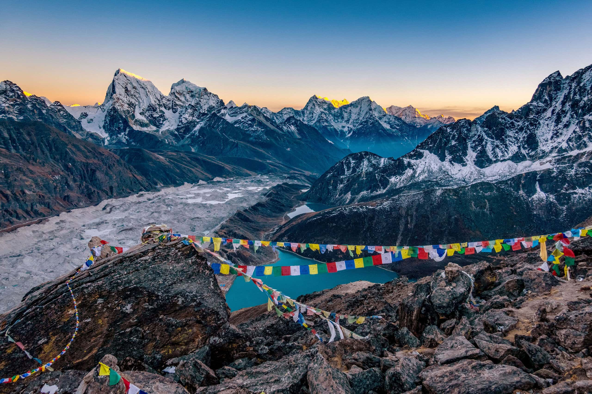
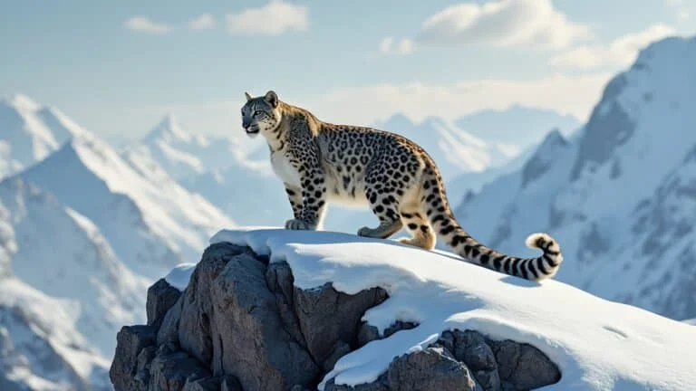
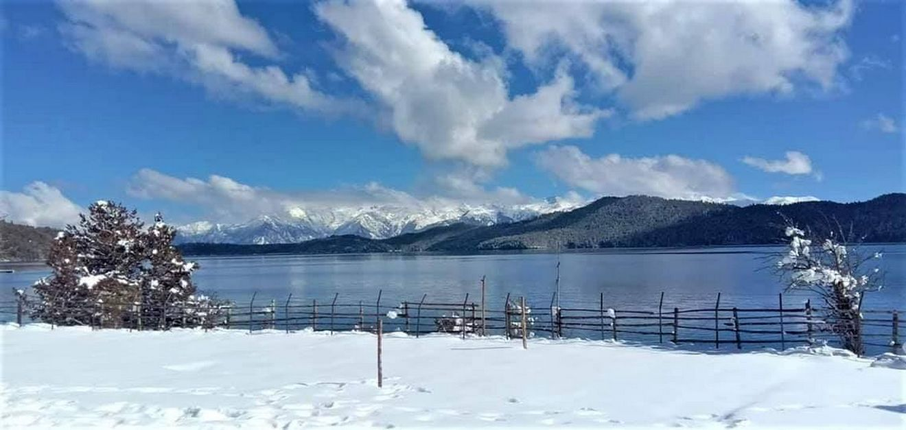
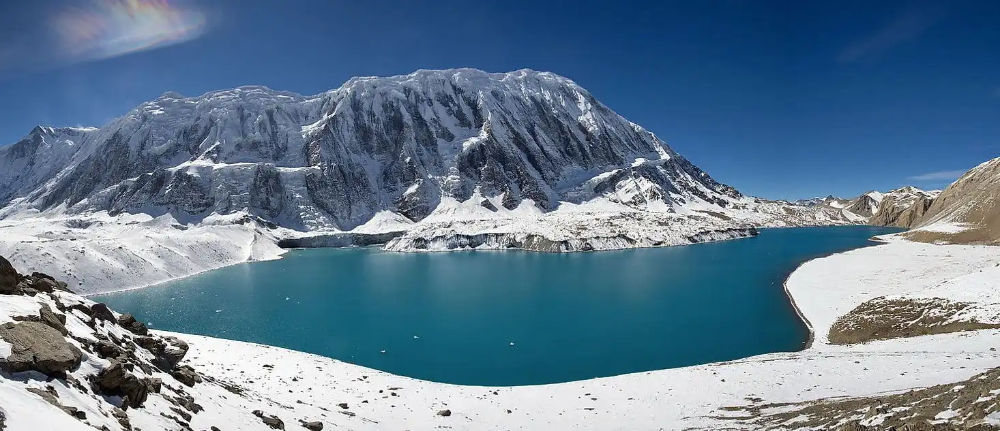

Mountain Soul
Pure & Wild
Nepal - Home of the World's Highest Mountains And Timeless Adventures.
Pure & Wild

Scene of Himalayas

Snow Leopard

Rara Lake - 2,990m
largest lake of Nepal

Tilicho Lake - 4,919m
Highest lake of Nepal
Exploring the Himalayas of Nepal offers a journey through dramatic landscapes where snowcapped peaks rise above deep valleys, rivers,lakes and forests. The region is home to Mount Everest and several of the world's highest mountains, attracting travelers from across the globe. Along the trails, visitors experience traditional villages, colorful prayer flags, ancient monasteries, and warm local hospitality, creating a deep connection between nature, culture, and spiritual mountain life that lasts forever for every explorer...
Beyond its beauty, the Himalayas of Nepal promise adventure and challenge. Famous routes like Everest Base Camp, Annapurna Circuit, and Langtang Valley test endurance while rewarding trekkers with unforgettable views. Activities such as mountaineering, wildlife spotting, and cultural encounters turn each journey into a powerful experience of discovery, personal growth, and respect for the strength of nature in high mountain environments and remote trails.
Tourism in Nepal's mountain regions thrives on a perfect mix of adventure and cultural exploration. Trekking is one of the most popular activities, with routes like the Everest Base Camp and Annapurna Circuit offering breathtaking views of snow-covered peaks, lush valleys, and diverse landscapes. Mountaineering attracts climbers from across the globe, eager to challenge themselves on iconic summits such as Mount Everest and other Himalayan giants. These adventures not only test endurance but also reward travelers with unforgettable experiences in pristine natural surroundings...
Beyond trekking and climbing, Nepal offers thrilling paragliding opportunities, especially in Pokhara, where adventurers soar above lakes and hills with panoramic views of the Himalayas. Cultural village tours add depth to the journey, allowing visitors to immerse themselves in traditional lifestyles, local crafts, and warm hospitality. Meeting villagers, sharing meals, and learning about customs enrich the adventure, making tourism in Nepal a blend of adrenaline, culture, and natural beauty.
Trekking
Mountaineering
Paragliding
Traditional Mountain Village
Nepal's mountain regions are most inviting in spring and autumn. These seasons bring clear skies, stable weather, and breathtaking views. Winter offers quieter trails but harsher cold, while monsoon months are best avoided except in rain-shadow areas like Mustang and Dolpo...
Nepal offers diverse trekking routes, from the iconic Everest Base Camp to the scenic Annapurna Circuit and the remote Manaslu Circuit. Each trail showcases unique landscapes, cultures, and challenges. Treks vary in duration and difficulty, making it possible to choose routes suited to different fitness levels...
| Route | Highlights | difficulty | Duration |
|---|---|---|---|
| Everest Base Camp | Views of Everest,Sherpa culture | Moderate–Hard | 12–14 days |
| Annapurna Circuit | Diverse landscapes, Thorong La Pass | Moderate | 15–20 days |
| Annapurna Base Camp | Close-up of Annapurna massif | Moderate | 7–10 days |
| Manaslu Circuit | Remote, cultural immersion | Hard | 14–18 days |
| Langtang Valley | Accessible from Kathmandu, Tamang culture | Moderate | 7–10 days |
| Upper Mustang | Desert landscapes, Tibetan culture | Moderate | 10–14 days |
Trekking in Nepal requires permits to ensure safety and conservation. The TIMS card is standard, while area-specific permits like ACAP for Annapurna or Sagarmatha National Park for Everest are essential. Restricted regions such as Upper Mustang demand special permits, often obtained through registered trekking agencies...
Safety in Nepal's mountains begins with acclimatization to prevent altitude sickness. Hiring licensed guides, carrying proper gear, and securing insurance for high-altitude evacuation are crucial. Staying hydrated, respecting local customs, and preparing for unpredictable weather help ensure a safe and rewarding trekking experience...